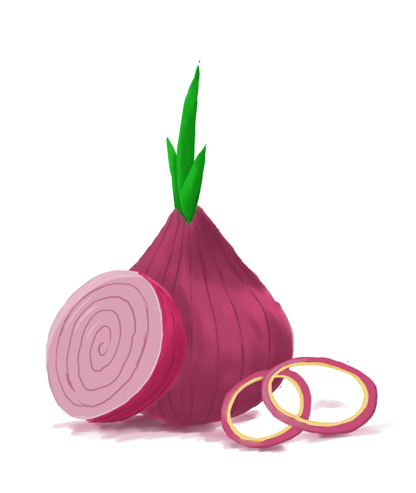
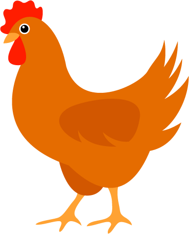

Char Siu Recipe 
- 2 tbs vegetable oil

- 1/2 C shallots 
- 2 tbs sugar
- 2 tsp light soy sauce

- 2 tsp dark soy sauce
- 2 tbs oyster sauce
- 1 1/2 tbs sesame oil

- 1/4 C chicken stock 
- 2 tbs all-purpose flour
- 2 C chopped char siu
DIRECTIONS 
- Heat 2 tablespoons oil in a wok over medium heat. Add the shallot/onion and stir-fry for 2 minutes. Add the sugar, soy sauce, oyster sauce, sesame oil, and dark soy. Stir and cook until it begins to bubble. Add the chicken stock and flour. Reduce the heat to medium low and cook, stirring, for 2-3 minutes, until thickened. Stir in the roast pork.
- Turn off the heat, and remove the filling from the wok onto a large plate. Separate the filling into 16 roughly equal piles, to ensure you get an even amount in each bun. Set aside to cool.